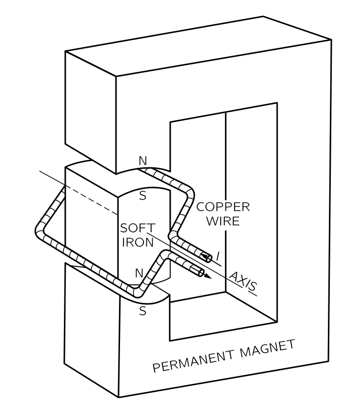
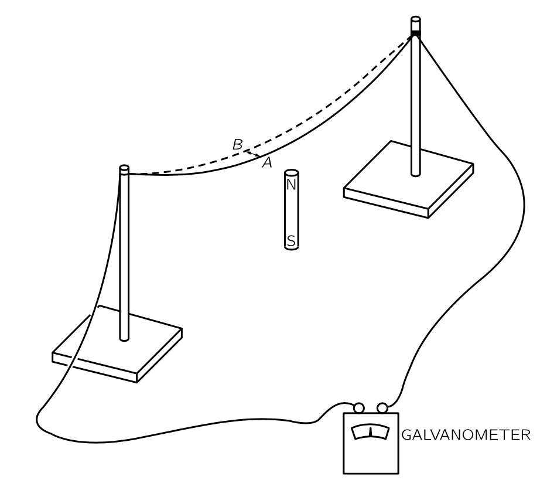
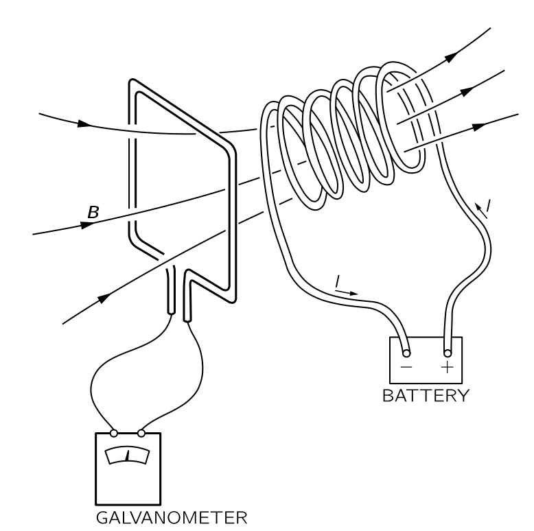
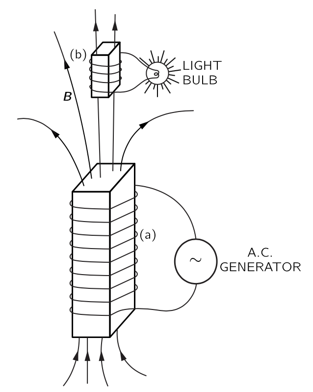
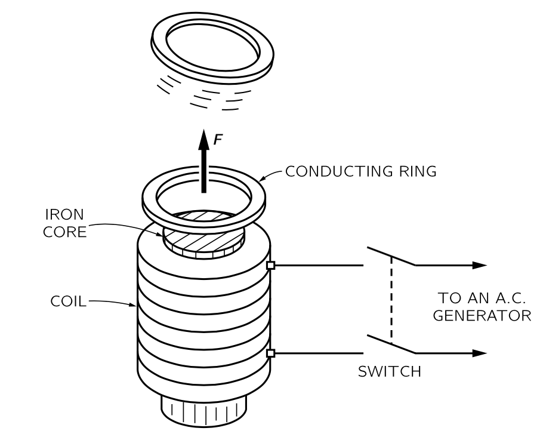
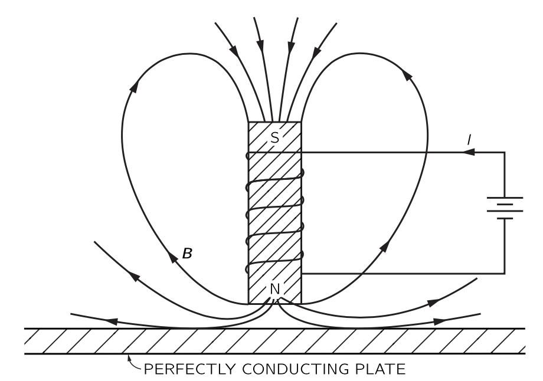
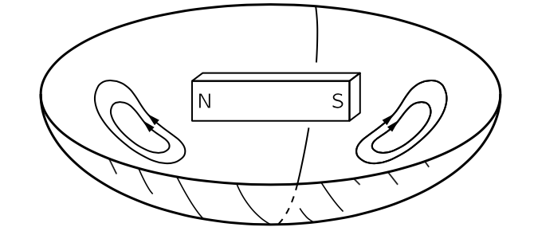

% %
%
\[ \DeclarePairedDelimiters{\set}{\{}{\}} \DeclareMathOperator*{\argmax}{argmax} \]
II.16 유도전류
II.16-1 모터와 발전기
1820년에 전기와 자기 사이에 밀접한 연관성에 대한 두가지의 발견이 있었다. 그전까지 두 대상은 꽤 독립적인 것으로 여겨져 왔다.
- 전선의 전류가 자기장을 만든다.
- 자기장 속의 전류가 흐르는 전선에 힘이 작용한다.

전류가 자기장을 만든다는 사실을 인식하자, 사람들은 즉시 어떤 식으로든 자석도 전기장을 만들 수 있을 것을 제안하며 다양한 실험이 시도되었다. 마침내 패러데이는 1840년에 전기 효과는 무언가가 변할 때만 발생한다는 것을 발견했다. 나란한 한 쌍의 전선 중 하나의 전류가 변하면, 다른 전선에 전류가 유도되거나, 자석을 전기 회로 근처로 이동하면 전류가 발생한다. 이를 전류가 유도된다 고 한다. 이 유도 현상은 다소 지루한 정적인 영역의 주제를 방대한 범위의 멋진 현상을 가진 매우 흥미롭고 역동적인 주제로 변모시켰다. 이 장에서는 그 중 일부에 대한 정성적 설명에 집중하도록 한다. 자세한 분석은 나중에 진행하도록 한다.
우리는 패러데이 시대에 알려지지 않은 자기장 내의 속도에 비례하는 이동 전하에 작용하는 힘 \(q\boldsymbol{v}\times \boldsymbol{B}\) 를 알고 있다. 예를 들어 자석 근처를 통과하는 전선이 있고 갈바노미터가 연결되어 있다고 하자. 자석 끝을 가로질러 전선을 움직이면 갈바노미터의 바늘이 움직인다.
자석은 약간의 수직 자기장을 발생시키며, 전선을 자기장에 밀어넣을 때 전선 안의 전자는 자기장과 속도에 직각을 이루는 힘을 느낀다. 이 힘은 전자를 전선을 따라 밀어낸다. 하지만 왜 이 힘이 멀리 떨어진 갈바노미터의 바늘을 움직이는 걸까? 왜냐하면 움직이는 자기력을 느끼는 전자는 전기적 반발로 좀 더 떨어진 전자를 전선 아래로 조금 더 밀어내고, 이 밀린 전자들은 다시 전자를 조금 더 멀리 밀어내며, 이것이 긴 거리에 걸쳐 진행된다. 놀라운 일이다.

첫 번째 갈바노미터를 만든가우스와 베버에게는 매우 놀라워서, 그들은 와이어의 힘이 얼마나 멀리까지 갈지 보려고 했다. 그들은 도시를 가로질러 전선을 설치했다. 가우스는 한쪽 끝에서 전선을 배터리에 연결했으며(배터리는 발전기보다 먼저 알려졌다) 그리고 베버는 갈바노미터가 움직이는 것을 관찰했다. 그들은 장거리 신호를 보내는 방법이 있었고 그것이 전신의 시작이었다! 물론, 이것은 유도와는 직접적인 관련이 없으며, 전류가 유도에 의해 전달되는지 여부와 관계없이 전선이 전류를 운반하는 방식과 관련이 있다.
그림 10.2 의 설정에서 전선을 그대로 두고 자석을 움직인다고 하자. 우리는 여전히 갈바노미터에 영향을 보고 있습니다. 패러데이가 발견했듯이, 자석을 전선 아래로 한쪽 방향으로 움직이는 것과 자석 위로 전선을 반대 방향으로 움직이는 것은 동일한 효과를 나타낸다. 하지만 자석이 움직일 때에는 우리는 더 이상 전선의 전자에 대한 \(q\boldsymbol{v}\times \boldsymbol{B}\) 힘이 없으며 이것은 패러데이가 발견한 새로운 효과이다. 오늘날에는 상대성 논증을 통해 그것을 이해 할 수 있다.
우리는 이미 자석의 자기장이 내부 전류에서 비롯된다는 것을 이해하고 있다. 따라서 그림 10.2 의 자석 대신 전류가 흐르는 코일을 사용할 경우 동일한 효과가 관찰될 것으로 기대한다. 전선을 코일 위로 이동시키면 갈바노미터에 전류가 흐르게 되며, 코일을 전선 너머로 이동시키면 전류가 발생한다. 하지만 더 흥미로운 것이 있다. 코일의 자기장을 움직이는 것이 아니라 코일에 흐르는 전류를 바꾸면 갈바노미터에 효과가 나타난다. 예를 들어, 그림 10.3 에 표시된 대로 코일 근처에 전선 고리가 있고, 두 회로를 모두 고정하되 전류를 차단하면, 갈바노미터를 통과하는 전류 펄스가 발생한다. 게다가 코일을 다시 켜면 갈바노미터가 반대 방향으로 작동한다.

그림 10.2 나 그림 10.3 과 같은 상황에서 갈바노미터에 전류가 있을 경우, 와이어 내 전자를 와이어를 따라 한쪽 방향으로 밀게 된다. 다른 장소에서 다른 방향으로 밀 수 있지만 한쪽 방향으로 더 많이 미는 경우가 생길 수 있다. 중요한 것은 전체 회로에 대한 추진이다. 이것을 기술하기 위해 기전력(electromotive force, emf) \(\mathcal{E}\) 를 다음과 같이 정의한다.
\[ \boxed{\mathcal{E} := \dfrac{1}{q}\oint_\text{circuit} \boldsymbol{f\cdot }\,d\boldsymbol{l}.} \tag{10.1}\]
여기서 \(\boldsymbol{f}\) 는 전하가 회로를 돌 때 받는 힘이다. 즉 기전력은 전체 회로를 한 바퀴 돌았을 때 단위 전하에 더해지는 일이다. 패라데이는 기전력이 전선에서 세 가지 방법으로 생성될 수 있음을 발견했다. (\(1\)) 전선을 움직여서, (\(2\)) 전선 근처의 자석을 움직여서, (\(3\)) 인근 전선의 전류를 변경해서.
그림 10.1 을 다시 생각해보자. 손이나 물레방아와 같은 외부 힘에 의해 고리(혹은 고리를 여려개 겹친 코일)를 회전시키면 전선이 자기장 안에서 움직이며 에서 기전력이 발생한다. 즉 모터가 발전기로 변한다.
발전기의 코일이 움직이면 기전력이 발생하는데 그 크기는 패러데이가 발견한 간단한 규칙을 따른다. (일단 사용하고 나중에 자세히 검토하자.) 이 규칙은 고리를 통과하는 자기장의 플럭스 \(\Phi_B\) 에 대해 다음과 같다.
\[ \mathcal{E} = -\dfrac{d \Phi_B}{d t} . \tag{10.2}\]
그림 10.1 의 코일이 회전하면 \(\Phi_B\) 가 변한다는 사실을 알 수 있다. 시작할 때는 일부 플럭스가 한 방향으로 흐른다. 코일이 \(180^\circ\) 회전하면 동일한 플럭스가 다른 방향으로 흐른다. 코일을 지속적으로 회전시키면 플럭스는 먼저 양수이고, 그 다음 음수, 그 다음 양수이며 이것이 계속된다. 플럭스의 변화율도 교대한다. 따라서 코일에 교대 기전력이 발생한다. 코일의 양쪽 끝을 외부 전선에 슬라이딩 접점(슬립 링이라고 함)을 통해 연결하면(전선이 꼬이지 않도록) 교류 발생기가 된다.
또는 일부 슬라이딩 접점을 이용하여 반회전 후 코일 끝과 외부 와이어 사이의 연결이 반전하도록 배치할 수 있으며, 이렇게 되면 기전력이 반전될 때 연결도 역전된다. 이 경우 기전력의 펄스는 외부 회로를 통해 항상 같은 방향으로 전류를 전달한다. 이것은 직류 발전기이다. 이렇게 그림 10.1 의 기계는 모터일수도, 발전기 일 수 도 있다. 모터와 발전기는 동등하다. 정량적 동등성은 사실 완전히 우연이 아니며 에너지 보존 법칙과 관련이 있다.
II.16-2 변압기와 인덕턴스
변압기와 자기유도
파라데이의 발견에서 가장 흥미로운 특징 중 하나는 한 코일에서 변하는 전류가 두 번째 코일에서 기전력을 발생시키는 점다. 그리고 놀랍게도, 두 번째 코일에서 유도된 기전력의 크기는 동일한 규칙에 의해 주어진다. 이것이 변압기를 가능하게 한다. 그림 10.4 과 같이 별개의 철판 다발에 감겨 있는 두개의 코일을 생각하자. 이제 코일(a)을 교류 발생기에 연결하면 지속적으로 변하는 자기장을 생기며 이 변하는 자기장은는 코일(b)에서 교대로 발생하는 기전력을 생성한다.

기전력은 코일(b)에서 원래 발잔기의 주파수와 동일하게 교대로 작동지만 코일(b)의 전류는 코일(a)의 전류보다 크거나 작을 수 있다. 코일(b)의 전류는 유도된 기전력과 회로의 나머지 부분의 저항 및 인덕턴스에 따라 달라진다. 코일(b) 를 여러 번 감아 감아 기전력을 발생기보다 훨씬 크게 만들 수 있는데 이는 주어진 자기장에서 코일을 통과하는 플럭스가 더 커지기 때문이다. 두 코일의 이러한 조합을 변압기라고 한다. 그것은 하나의 기전력을 다른 기전력으로 변환시킨다.
단일 코일에도 유도 효과가 있다. 예를 들어, 그림 10.4 에서는 전구를 밝히는 코일(b) 뿐만 아니라 코일(a)을 통해서도 변화하는 플럭스가 존재합니다. 코일(a) 내부의 변동하는 전류는 자체 내부에서 변동하는 자기장을 발생시키며, 이 자기장의 플럭스는 지속적으로 변하므로 코일(a) 내에 자체 유도된 기전력이 존재한다. 전류가 자기장을 형성하고 있을 때—일반적으로 그 자기장이 어떤 형태로든 변할 때 전류에 작용하는 기전력이 존재한다. 이 효과를 자기 유도 (self inductance) 라고 한다.
렌츠의 규칙
이제 기전력의 방향을 알아보자. 기전력의 방향은 렌츠의 규칙(Lenz’s rule) 이라는 간단한 규칙을 따른다. 이에 따르면 기전력은 모든 플럭스 변화를 억제하려는 방향으로 발생한다. 즉, 유도된 기전력 방향은 항상 기전력을 발생시키는 자기장의 방향과 반대방향으로 자기장이 생성되도록 정해진다. 특히, 단일 코일(또는 어떤 전선)에서 전류가 변하는 경우 회로에 반대 방향의 기전력이 존재한다. 이 EMF는 그림 10.4 코일(a)에서 흐르는 전하에 작용하여 자기장 변화에 저항하고, 따라서 전류 변화에 저항하는 방향으로 방향으로 작용한다. 즉 전류를 일정하게 유지하려고 한다. 자기 유도로 생성되는 전류는 “관성”을 가지고 있다.
II.16-3 유도 전류에 작용하는 힘

그림 10.5 에 표현된 장치는 렌츠의 규칙을 극적으로 보여준다. 전자석 끝에 알루미늄 고리가 놓인다. 스위치를 닫아 코일을 교류 발생기에 연결하면, 링이 공기 중으로 날아간다다. 그 힘은 물론 고리에 유도된 전류에서 비롯되며 고리가 날아간다는 것은 고리에 발생한 전류가 그 고리를 통과하는 장의 변화를 반대한다는 것을 의미한다. 자석이 상단에 북극을 만들고 있을 때, 고리 내 유도된 전류가 아래쪽을 향하는 북극을 만들고 있습니다. 링과 코일은 마치 반대쪽에 같은 극을 가진 두 개의 자석처럼 반사됩니다. 링에 얇은 틈을 만들면(그래서 전류가 흐르지 않게 하면) 힘이 사라지는데 이는 서로 미는 힘이 링의 전류에서 비롯된다는 것을 보여준다.
만약 고리 대신에 그림 10.5 의 전자석 끝에 알루미늄 또는 구리 디스크를 배치하면, 이것도 반발되며, 유도된 전류가 디스크의 물질 내를 순환하며 반발력을 만들어 낸다.
기원이 유사한 흥미로운 효과가 완전한 전도체의 시트에 발생한다. “완전 도체”에서는 전류에 전혀 저항이 없다. 따라서 전류가 생성되면, 그것은 영원히 계속될 수 있다. 실제로, 가장 작은 기전력도 임의의 크기의 전류를 발생시키므로, 이는 실제로 기전력이 전혀 존재할 수 없다는 것을 의미한다. 이러한 시트를 통해 자기 플럭스를 흐르게 하려는 모든 시도는 강한 반대 방향 자기장을 생성하는 전류를 발생시킨다. 모두 무한소 기전력을 가지고 있어 플럭스가 들어오지 않는다.

완전 도체의 시트 옆에 전자석을 놓으면, 전자석의 전류를 켤 때 와전류 (eddy current) 라고 하는 전류가 시트에 나타나므로 자기 플럭스가 들어오지 않는다. 자기장선은 그림 10.6 에 표현된 대로 보일 것이다. 물론, 막대 자석을 완전 전도체 근처에 두어도 같은 일이 발생합니다. 와전류가 반대 방향의 자기장을 생성하기 때문에, 자석이 도체에서 밀린다. 이는 그림 10.7 에 표시된 바와 같이 접시 모양의 완전 전도체 시트 위에 공기 중에 막대 자석을 매달 수 있게 한다. 자석은 완전 도체에서 유도된 와전류의 반발에 의해 매달려 있다. 낮은 온도에서 완전 도체가 존재할 수 있으며 이를 초전도체 (superconductor) 라고 한다.

그림 10.6 의 도체가 완전 도체가 아닐경우, 와전류 흐름에 약간의 저항이 발생하며 전류는 점차 사라지는 경향이 있고 자석은 서서히 가라앉게 된다. 불완전 도체의 와전류는 지속되기 위해 기전력이 필요하고, 기전력을 갖기 위해서는 플럭스가 계속 변해야 한다. 자기장의 플럭스가 점차 도체를 관통한다.
일반 도체에서는 와전류에 의해 발생하는 반발력뿐만 아니라 측면력(sidewise force)도 발생할 수 있다. 예를 들어, 전도면을 따라 자석을 옆으로 이동시키면 와전류가 인장력을 발생시키게 되며, 이는 유도된 전류가 플럭스 위치의 변화를 반대하기 때문이다. 이러한 힘은 속도에 비례하며 일종의 점성력과 같다.
…. 이후 생략 …